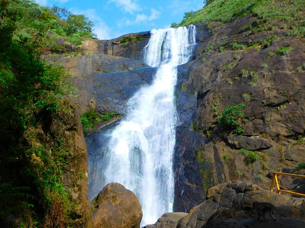

Jatayu Earth's Centre
It stands at an altitude of 350m above the mean sea level. Jatayu Nature Park holds the distinction of having the world’s largest bird sculpture, which is of Jatayu.

Thangassery Light House
The cylindrical lighthouse tower painted with white and red oblique bands has a height of 41 metres (135 ft), making it the second tallest lighthouse in Kerala coast.

Palaruvi Falls
Palaruvi water falls is one of keralas most beautiful water falls. Which makes its way down from height of 300feet.